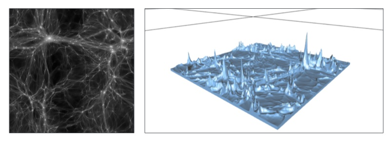
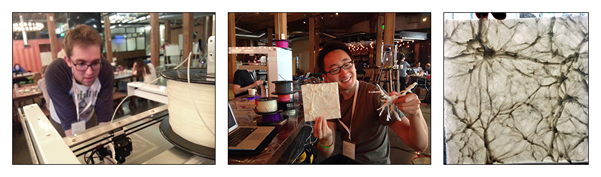

Making 3d models of cosmic structure!
View the Project on GitHub devonmpowell/3d_print_the_universe

As the Universe expanded and cooled after the Big Bang, small variations in density began to grow due to gravitational clumping of dark matter. This seemingly mundane process created a variety of complex structures: In the same way that a river cuts its own course through a landscape, dark matter flows "downhill" through the cosmic gravitational "landscape" to create filaments ("rivers") that feed matter into dense haloes ("lakes").
We have created the world's first 3D model of this "dark landscape" using state-of-the-art computational tools and 3D printing technology.
The 3D models are:
fullbox_00.stl: A full N-body simulation box at z = 0. This volume is 40 Mpc/h (~100 million
light-years) on a side!halo.stl: A zoomed-in version, centered on one dark matter halo, showing the filaments flowing into itheightmap.stl: A 3D realization of a "3D plot" of the line-of-sight projected density along one axis.obj file.stl models suitable for 3D printing (converted from .obj using Blender) fullbox_00.stl is 99MB!By Tony Li and Devon Powell at Science Hack Day, October 4-5, 2014 at GitHub HQ, San Francisco, CA. Inspiration from Matt Bellis and Phil Marshall. Many thanks to Matt Bennett (Type A Machines) and Matt Hova (Autodesk) for volunteering their 3D printing equipment and expertise!